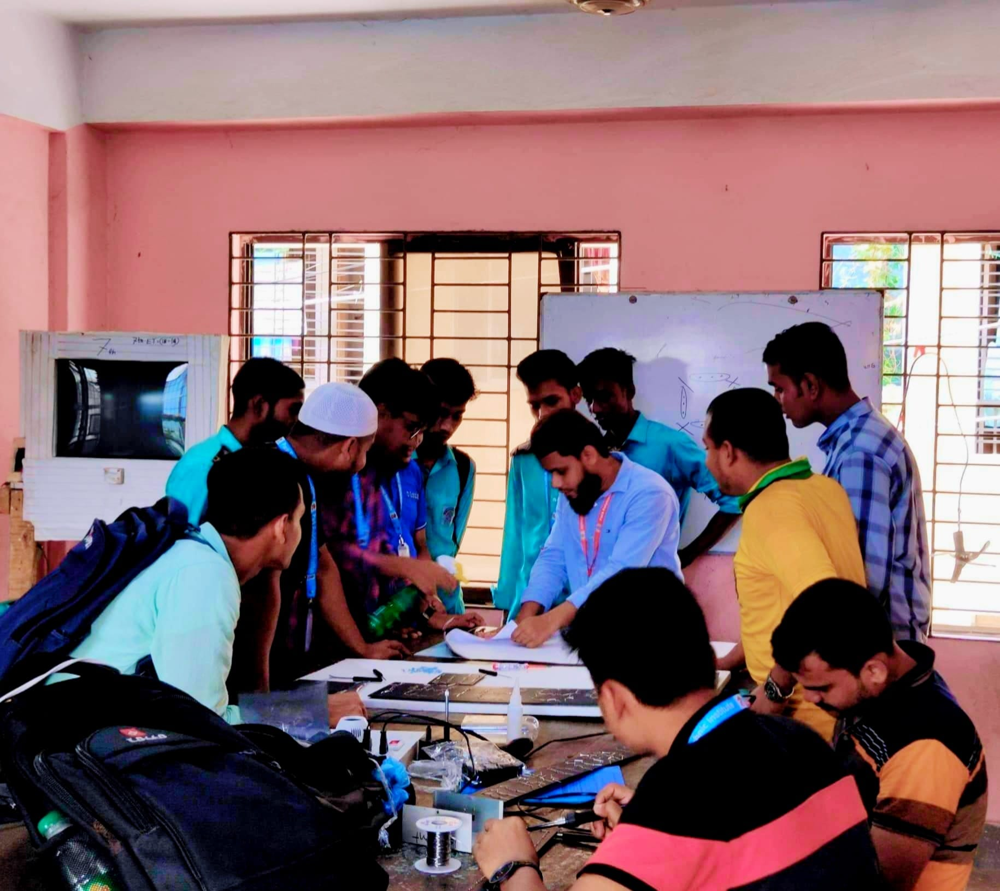

Electrical Engineering

ডিপ্লোমা ইন ইলেকট্রিক্যাল টেকনোলজি কি ?
ইলেকট্রিক্যাল ইঞ্জিনিয়ারিং এমন একটি সাবজেক্ট যেটিকে ইঞ্জিনিয়ারিং শাখার আত্না বলা হয়। এটি এমন একটি ক্ষেত্র যেখানে সাধারণত ইলেক্ট্রিসিটি, ইলেক্ট্রনিক্স ও ইলেক্ট্রম্যাগনেটিজমের জ্ঞান ও দক্ষতা অর্জন করানো হয়। সবচেয়ে পুরাতন এবং প্রচলিত ইঞ্জিনিয়ারিং এর মধ্যে এই সাবজেক্টটি অন্যতম এবং চাহিদা সম্পন্ন । সরকারি /বেসকারি পলিটেকনিকগুলোতে এই টেকনোলজি বেশির ভাগ শিক্ষার্থীদের প্রথম চাহিদা হয়ে থাকে। আর বিএসসি ইঞ্জিনিয়ারিং এ এই সাবজেক্টটি “ইইই” নামেই পরিচিত।
কেন পড়বেনঃ
এক কথায় ইলেকট্রিক্যাল যন্ত্রপাতি যদি আপনার ভালো লাগে, ফিজিক্সের বিদ্যুতের চ্যাপ্টারগুলো যদি আপনার কাছে প্যারা মনে না হয় , ইলেক্ট্রিসিটি নিয়ে যদি আপনার নূন্যতম কৌতুহলও থাকে, কাশরফের ম্যাথ করে যদি আপনাকে আবিষ্কারের নেশায় পেয়ে বসে তাহলে এই ইলেকট্রিক্যাল টেকনোলজিটি আপনার জন্য গুরুত্বপূর্ণ ভূমিকা পালন করবে।
যে সমস্ত বিষয়গুলো নিয়ে ইলেকট্রিক্যাল টেকনোলজিতে আলোচনা করা হয়ঃ
এসি মেশিন, ডিসি মেসিন , পিসিবি ডিজাইন , ট্রান্সমিশন এন্ড ডিস্ট্রিবিউশন অব ইলেকট্রিক্যাল এনার্জি, সিগন্যাল প্রসেসিং ছাড়াও অনেক গুরুত্বপূর্ন বিষয়গুলো নিয়ে আলোচনা করা হয়।ইলেকট্রিক্যাল ইঞ্জিনিয়ারদের কর্মক্ষেত্রঃ
ইলেকট্রিক্যাল ইঞ্জিনিয়ারদের চাকরির বাজার নিয়ে কোন কথা হবেনা। ইলেকট্রিক্যাল হলো একটি Everlasting Subject !! যত দিন পৃথিবী টিকে থাকবে ততদিন এর ডিমান্ড শেষ হবে না। দেশে থাকতে পারলেও যেমন চাকরি নিয়ে আপনার চিন্তার প্রয়োজন নেই , তদ্রুব দেশের বাইরে গেলেও চাকরির অভাব ইলেকট্রিক্যাল ইঞ্জিনিয়ারদের করতে হয় না।
সরকারি বিভিন্ন প্রতিষ্ঠান যেমনঃ বিদ্যুৎ বিভাগ, প্রকৌশল অধিদপ্তর, রেলওয়ে, হাসপাতাল, সশস্ত্র বাহিনী, পল্লীবিদ্যুৎ , স্বায়ত্তশাসিত পাওয়ার প্ল্যান্ট, গার্মেন্টস শিল্পে, বেসরকারি বিভিন্ন প্রতিষ্ঠানগুলোতে চাকরির সুযোগ রয়েছে।
একজন ইলেকট্রিক্যাল ইঞ্জিনিয়ার বৈদ্যুতিক যন্ত্রপাতি রক্ষণাবেক্ষণ, নকশা প্রণয়ন, পরীক্ষা-নিরীক্ষা সংক্রান্ত বাস্তবায়ন করে কাজ করে থাকেন। বৈদ্যুতিক পাওয়ার সিস্টেম থেকে শুরু করে সিগন্যাল প্রসেসিং এবং ম্যানেজমেন্ট সেক্টরে ও কাজ করার সক্ষমতা একজন ইলেকট্রিক্যাল ইঞ্জিনিয়ার রাখেন।
উচ্চ শিক্ষার সুযোগঃ
ডিপ্লোমা ইঞ্জিনিয়ারিং করার পর বিএসসি ইঞ্জিনিয়ারিং করার জন্য সরকারিভাবে ডুয়েটে সুযোগ আছে তাছাড়া অনেক প্রাইভেট প্রতিষ্ঠানেও এখন ডিপ্লোমা হোল্ডারদের বিএসসি ইঞ্জিনিয়ারিং এর জন্য সুযোগ প্রদান করা হচ্ছে।
ডিপ্লোমা ইঞ্জিনিয়ারিং বিষয়টি হল আর্থিকভাবে কম শক্তিশালী, কিন্তু ইঞ্জিনিয়ারিং পড়তে ইচ্ছুক ছাত্র-ছাত্রীদের জন্য একটি সম্ভাবনাময় পথ। আর এই ইলেকট্রিক্যাল টেকনোলজিই হতে পারে সেই পথের প্রধান সহায়ক। বর্তমানে চাকরির বাজারগুলোতে খেয়াল করলে দেখতে পারবেন উচ্চ শিক্ষাগ্রহন করে ও চাকরি নামের সোনার হরিণ অনেকের কাছে অধরা থেকেই যায় আর সেখানে ডিপ্লোমা ইঞ্জিনিয়ারগণ চাকরির পাশাপাশি নিজ কর্মসংস্থানও চাইলে সৃষ্টি করতে পারেন । তাই ডিপ্লোমা ইন ইঞ্জিনিয়ারিং হোক এস এস সি পর আপনার প্রথম পছন্দ।